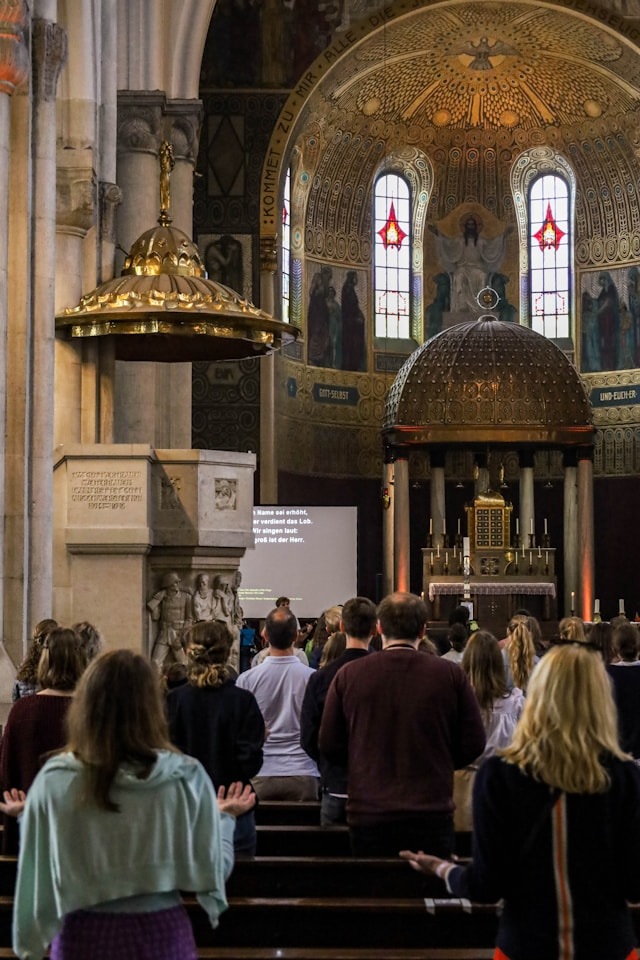
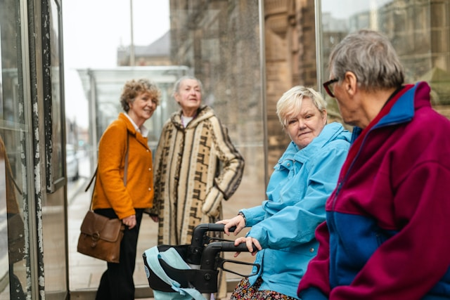
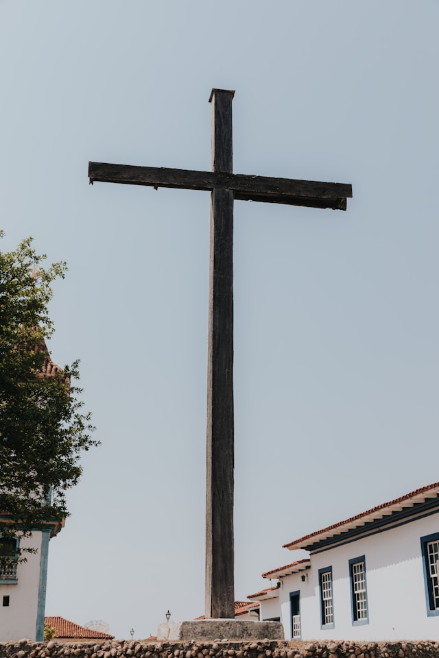

Methodist Church Ijoku
☰
Home
About Us
Worship & Services
Sermons
Gallery
Contact Us
Church Gallery
Moments of worship, fellowship, and service captured within our church community.
Our Moments
Life of the Church
  